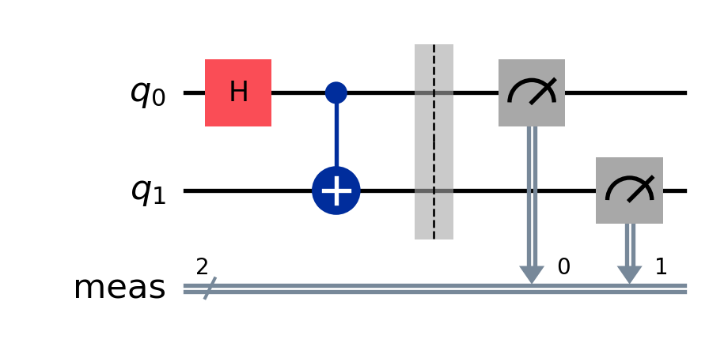
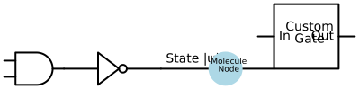
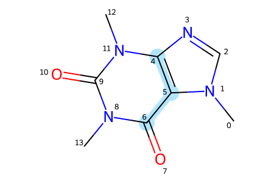

from qiskit import QuantumCircuitimport schemdrawimport schemdraw.logic as logicimport schemdraw.elements as elmfrom rdkit import Chemfrom rdkit.Chem import Drawfrom rdkit.Chem.Draw import rdMolDraw2Dfrom IPython.display import SVG
This is the first post in a Quarto blog. Welcome!
Click to see the Qiskit circuit setup code
# 1. Vous créez votre circuitqc = QuantumCircuit(2)qc.h(0) # Porte de Hadamardqc.cx(0, 1) # Porte CNOT (intrication)qc.measure_all()# 2. Vous affichez le circuit avec un rendu proqc.draw(output='mpl') # 'mpl' utilise Matplotlib pour un dessin haute résolution

Figure 1: Quantum circuit for Bell State generation.
# Création du dessinwith schemdraw.Drawing() as d:# 1. Porte logique standard (AND) A = d.add(logic.And())# 2. Porte NOT connectée à la sortie de la porte AND d.add(logic.Not().at(A.out))# 3. Une ligne vers la droite L = d.add(elm.Line().right().length(2).label('State |ψ⟩', loc='top'))# 4. Pour un cercle customisé, on utilise elm.Dot ou les formes 'shapes' :# Solution A : Un grand point / nœud coloré (très simple) d.add(elm.Dot(radius=0.5).at(L.end).color('lightblue').label('Molecule\nNode', loc='center', color='black', fontsize=9))# Solution B : Pour faire vos propres boîtes "boîte noire" quantique : d.add(elm.Line().right().length(1.5)) d.add(elm.Ic(pins=[elm.IcPin(name='In', side='left'), elm.IcPin(name='Out', side='right')], size=(2, 2)).label('Custom\nGate', loc='center'))

flowchart LR
A["Initial State |0⟩"] --> B["Molecular Hamiltonian"]
B --> C{"VQE Optimization"}
C -->|Update parameters| B
C -->|Converged| D["Ground State Energy"]
# 1. Définir la molécule à partir de sa chaîne SMILES# Exemple : La caféinecaffeine_smiles ="CN1C=NC2=C1C(=O)N(C(=O)N2C)C"mol = Chem.MolFromSmiles(caffeine_smiles)# 2. Préparer un dessin vectoriel haute définition (SVG)drawer = rdMolDraw2D.MolDraw2DSVG(450, 300) # Largeur, Hauteur# Options d'esthétique scientifiqueoptions = drawer.drawOptions()options.addAtomIndices =True# Affiche le numéro de chaque atome (très utile pour référencer vos qubits !)options.bondLineWidth =2# Épaisseur des liaisons chimiques# 3. Mettre en évidence des atomes spécifiques # Imaginons que les atomes 4, 5 et 6 forment le sous-système quantique que vous étudiez :target_atoms = [4, 5, 6]target_bonds = [mol.GetBondBetweenAtoms(4, 5).GetIdx(), mol.GetBondBetweenAtoms(5, 6).GetIdx()]# Dessiner la molécule avec surlignagedrawer.DrawMolecule( mol, highlightAtoms=target_atoms, highlightBonds=target_bonds, highlightAtomColors={4: (0.7, 0.9, 1.0), 5: (0.7, 0.9, 1.0), 6: (0.7, 0.9, 1.0)} # Bleu clair)drawer.FinishDrawing()# 4. Afficher directement dans Quartosvg = drawer.GetDrawingText()SVG(svg)

# Initialiser le dessin vectorielwith schemdraw.Drawing() as d: d.config(fontsize=12, unit=2.5)# 1. Ajouter la porte XOR (Somme) xor = d.add(logic.Xor().label('Sum ($S$)', loc='right'))# 2. Entrées A et B line_A = d.add(elm.Line().left(2).at(xor.in1).label('A', loc='left')) line_B = d.add(elm.Line().left(2).at(xor.in2).label('B', loc='left'))# 3. Ajouter la porte AND (Retenue / Carry) en dessous d.add(elm.Line().down(2).at(xor.in1)) d.add(elm.Dot()) # Point de connexion (jonction) and_gate = d.add(logic.And().at((xor.in1[0] +1.5, xor.in1[1] -2.5)).label('Carry ($C$)', loc='right'))# Connexions vers la porte AND d.add(elm.Wire('|-').to(and_gate.in1)) d.add(elm.Line().down(1.7).at(xor.in2)) d.add(elm.Dot()) d.add(elm.Wire('|-').to(and_gate.in2))